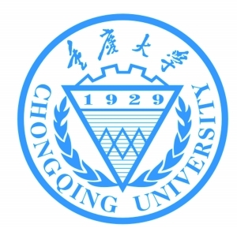

重大前端

重大前端
重庆大学（Chongqing University），简称重大（CQU），坐落于中央直辖市重庆，是中共中央直管、教育部直属的副部级全国重点大学，国家“211工程”、“985工程”首批重点建设的高校，也是“2011计划”、“111计划”、“卓越工程师教育培养计划”、“卓越法律人才教育培养计划”、“重庆市大学联盟”、“国家建设高水平大学公派研究生项目”的主要成员。是国家31所副部级中管高校之一，教育部批准建研究生院的56所高校之一，研究生自主划线的34所名牌大学之一，由教育部和重庆市共建，享有 “嘉陵与长江相汇而生重庆，人文与科学相济而衍重大”的美誉。
学科建设
截止2014年6月，学校设有博士后流动站24个，一级学科博士点28个、二级学科博士点105个，一级学科硕士点51个、二级学科硕士点205个，专业学位授权类别19种（含建筑学学士、高级管理人员工商管理硕士、工程博士）。一级学科国家重点学科3个、二级国家重点学科17个、国家重点（培育）学科2个，国家“211工程”重点建设学科14个，省部级一级重点学科37个、立项建设1个。
重庆大学（Chongqing University），简称重大（CQU），坐落于中央直辖市重庆，是中共中央直管、教育部直属的副部级全国重点大学，国家“211工程”、“985工程”首批重点建设的高校，也是“2011计划”、“111计划”、“卓越工程师教育培养计划”、“卓越法律人才教育培养计划”、“重庆市大学联盟”、“国家建设高水平大学公派研究生项目”的主要成员。是国家31所副部级中管高校之一，教育部批准建研究生院的56所高校之一，研究生自主划线的34所名牌大学之一，由教育部和重庆市共建，享有 “嘉陵与长江相汇而生重庆，人文与科学相济而衍重大”的美誉。重庆大学（Chongqing University），简称重大（CQU），坐落于中央直辖市重庆，是中共中央直管、教育部直属的副部级全国重点大学，国家“211工程”、“985工程”首批重点建设的高校，也是“2011计划”、“111计划”、“卓越工程师教育培养计划”、“卓越法律人才教育培养计划”、“重庆市大学联盟”、“国家建设高水平大学公派研究生项目”的主要成员。是国家31所副部级中管高校之一，教育部批准建研究生院的56所高校之一，研究生自主划线的34所名牌大学之一，由教育部和重庆市共建，享有 “嘉陵与长江相汇而生重庆，人文与科学相济而衍重大”的美誉。重庆大学（Chongqing University），简称重大（CQU），坐落于中央直辖市重庆，是中共中央直管、教育部直属的副部级全国重点大学，国家“211工程”、“985工程”首批重点建设的高校，也是“2011计划”、“111计划”、“卓越工程师教育培养计划”、“卓越法律人才教育培养计划”、“重庆市大学联盟”、“国家建设高水平大学公派研究生项目”的主要成员。是国家31所副部级中管高校之一，教育部批准建研究生院的56所高校之一，研究生自主划线的34所名牌大学之一，由教育部和重庆市共建，享有 “嘉陵与长江相汇而生重庆，人文与科学相济而衍重大”的美誉。